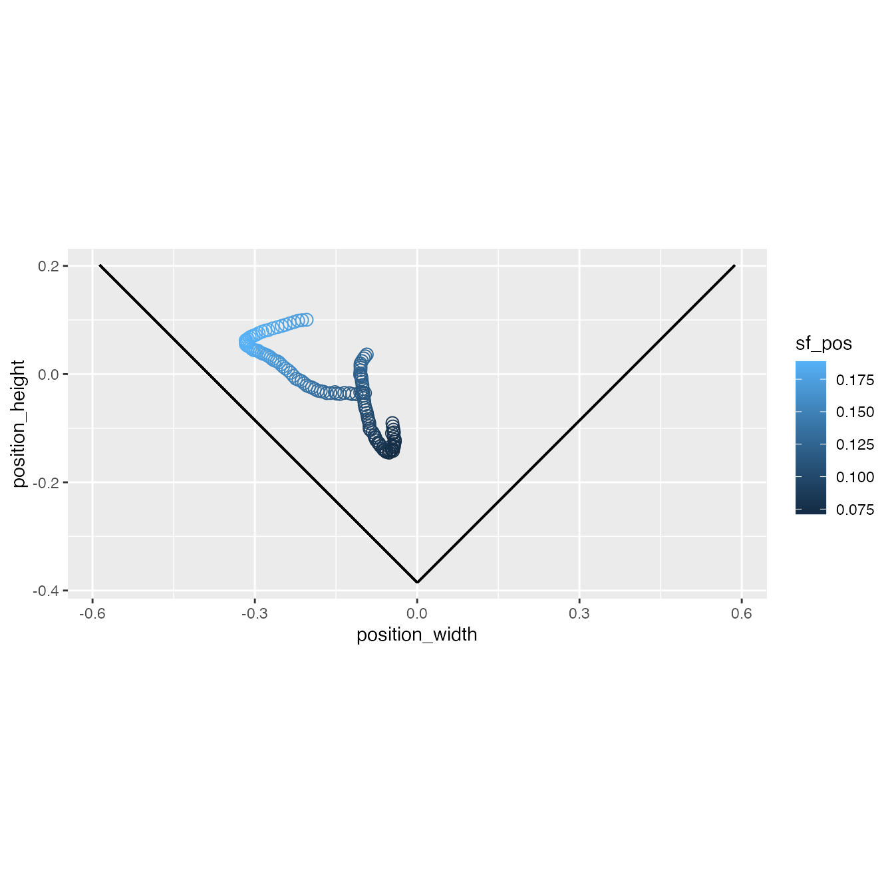
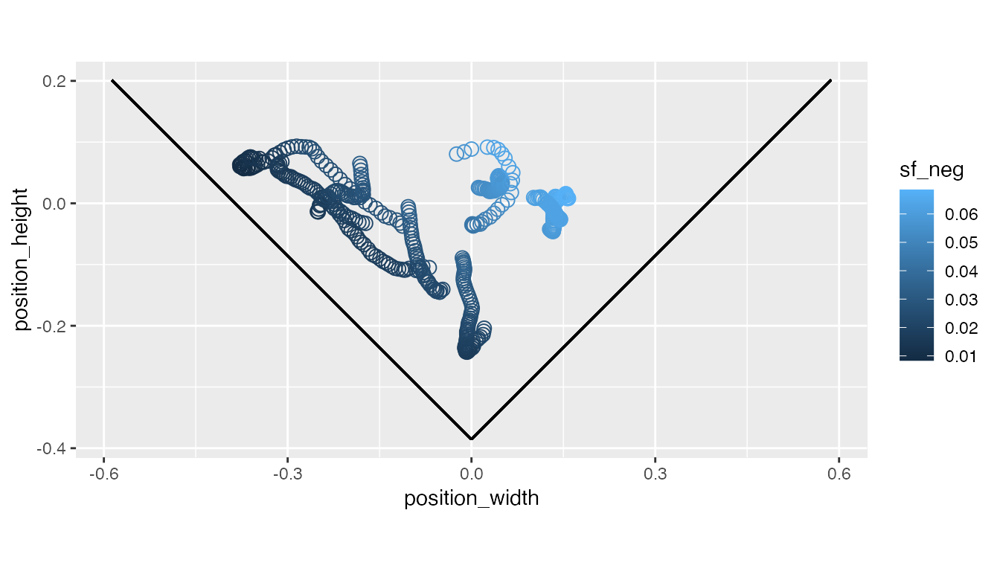
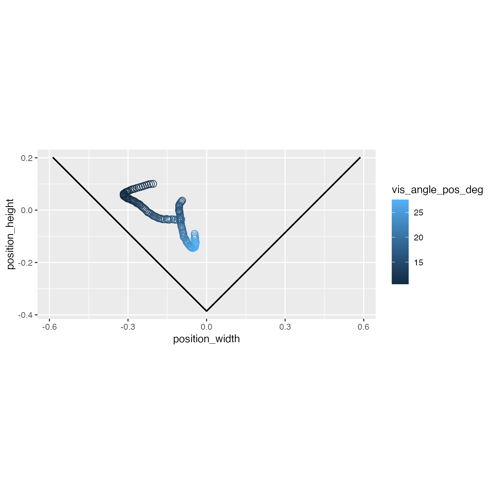
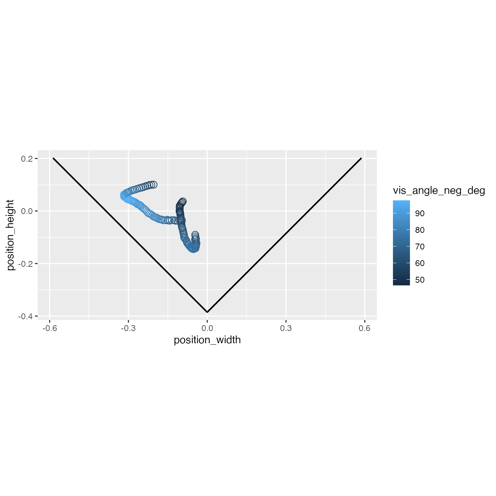

vignettes/visual-perception-functions.Rmd
visual-perception-functions.RmdpathviewR includes functions that estimate visual perceptions based on the distance between the subject/observer and visual stimuli on the walls of the experimental tunnel.
We’ll need to start by loading pathviewR as well as tidyverse for visualization purposes
Data objects must be prepared via the pathviewR import and clean pipeline prior to their use in these functions.
Let’s work with an example dataset included in pathviewR. july-29_group-I_16-20.csv is a .csv file exported from Motive.pathviewR’s importing and cleaning pipeline produces variables and attributes required by these visual estimation functions.
motive_data <- read_motive_csv( system.file("extdata", "pathviewR_motive_example_data.csv", package = 'pathviewR') ) motive_full <- motive_data %>% relabel_viewr_axes() %>% gather_tunnel_data() %>% trim_tunnel_outliers() %>% rotate_tunnel() %>% get_velocity() %>% select_x_percent(desired_percent = 75) %>% ## skip rename_viewr_characters(), which defaults to FALSE anyway separate_trajectories(max_frame_gap = "autodetect", frame_gap_messaging = FALSE) %>% get_full_trajectories(span = 0.95) #> autodetect is an experimental feature -- please report issues.
Now that our object has been cleaned, we need to add information about the experiment using insert_treatments(), in which that are necessary for calculating visual perceptions are added to the object. The data gathered for this experiment were collected from a V-shaped tunnel in which the origin (0,0,0) was set 0.3855m above the vertex height and the lateral walls were angled at ±45˚from the vertical axis. The visual stimulus on the positive side of the tunnel (where position_width values > 0) was a series of horizontal sine wave gratings with a cycle length of 0.1m on the screen. The visual stimulus on the negative side of the tunnel (where position_width values < 0) were vertical sine wave gratings with a cycle length of 0.2m on the screen.
Therefore:
motive_V <- motive_full %>% insert_treatments(vertex_height = -0.3855, vertex_angle = 45, stim_param_pos = 0.1, stim_param_neg = 0.2, treatment = "latB")
Our object now has the variables, vertex_height, vertex_angle, stim_param_pos, and stim_param_neg which are needed to calculate visual perceptions. The variable treatment has also been included and this information has been stored in the object’s metadata.
motive_V #> # A tibble: 135 x 29 #> vertex_height vertex_angle stim_param_pos stim_param_neg treatment frame #> <dbl> <dbl> <dbl> <dbl> <chr> <int> #> 1 -0.386 0.785 0.1 0.2 latB 72626 #> 2 -0.386 0.785 0.1 0.2 latB 72627 #> 3 -0.386 0.785 0.1 0.2 latB 72628 #> 4 -0.386 0.785 0.1 0.2 latB 72629 #> 5 -0.386 0.785 0.1 0.2 latB 72630 #> 6 -0.386 0.785 0.1 0.2 latB 72631 #> 7 -0.386 0.785 0.1 0.2 latB 72632 #> 8 -0.386 0.785 0.1 0.2 latB 72633 #> 9 -0.386 0.785 0.1 0.2 latB 72634 #> 10 -0.386 0.785 0.1 0.2 latB 72635 #> # … with 125 more rows, and 23 more variables: time_sec <dbl>, subject <chr>, #> # position_length <dbl>, position_width <dbl>, position_height <dbl>, #> # rotation_length <dbl>, rotation_width <dbl>, rotation_height <dbl>, #> # rotation_real <dbl>, mean_marker_error <dbl>, velocity <dbl>, #> # length_inst_vel <dbl>, width_inst_vel <dbl>, height_inst_vel <dbl>, #> # traj_id <int>, file_sub_traj <chr>, traj_length <int>, start_length <dbl>, #> # end_length <dbl>, length_diff <dbl>, start_length_sign <dbl>, #> # end_length_sign <dbl>, direction <chr>
To calculate the spatial frequency of the visual stimuli as perceived by the subject some distance from the stimuli, we will use calc_sf_V() and not calc_sf_box as our data were collected in a V-shaped tunnel.
motive_V_sf <- motive_V %>% calc_sf_V(simplify_output = FALSE) ## The resulting object contains 10 new variables which are values involved in ## the calculation of spatial frequency. motive_V_sf #> # A tibble: 135 x 39 #> vertex_height vertex_angle stim_param_pos stim_param_neg treatment frame #> <dbl> <dbl> <dbl> <dbl> <chr> <int> #> 1 -0.386 0.785 0.1 0.2 latB 72626 #> 2 -0.386 0.785 0.1 0.2 latB 72627 #> 3 -0.386 0.785 0.1 0.2 latB 72628 #> 4 -0.386 0.785 0.1 0.2 latB 72629 #> 5 -0.386 0.785 0.1 0.2 latB 72630 #> 6 -0.386 0.785 0.1 0.2 latB 72631 #> 7 -0.386 0.785 0.1 0.2 latB 72632 #> 8 -0.386 0.785 0.1 0.2 latB 72633 #> 9 -0.386 0.785 0.1 0.2 latB 72634 #> 10 -0.386 0.785 0.1 0.2 latB 72635 #> # … with 125 more rows, and 33 more variables: time_sec <dbl>, subject <chr>, #> # position_length <dbl>, position_width <dbl>, position_height <dbl>, #> # rotation_length <dbl>, rotation_width <dbl>, rotation_height <dbl>, #> # rotation_real <dbl>, mean_marker_error <dbl>, velocity <dbl>, #> # length_inst_vel <dbl>, width_inst_vel <dbl>, height_inst_vel <dbl>, #> # traj_id <int>, file_sub_traj <chr>, traj_length <int>, start_length <dbl>, #> # end_length <dbl>, length_diff <dbl>, start_length_sign <dbl>, #> # end_length_sign <dbl>, direction <chr>, height_2_vertex <dbl>, #> # height_2_screen <dbl>, width_2_screen_pos <dbl>, width_2_screen_neg <dbl>, #> # bound_pos <dbl>, bound_neg <dbl>, min_dist_pos <dbl>, min_dist_neg <dbl>, #> # sf_pos <dbl>, sf_neg <dbl>
simplify_output = TRUE returns an object containing the 4 new variables min_dist_pos, mind_dist_neg, sf_pos, sf_neg.
To calculate an estimation of the visual angles percieved by the subject, we will use calc_vis_angle_V and not calc_vis_angle_box because the data was collected in a V-shaped tunnel.
motive_V_angles <- motive_V %>% calc_vis_angle_V(simplify_output=FALSE) ## The resulting object contains 12 new variables which are values involved in the ## calculation of visual angles. motive_V_angles #> # A tibble: 135 x 41 #> vertex_height vertex_angle stim_param_pos stim_param_neg treatment frame #> <dbl> <dbl> <dbl> <dbl> <chr> <int> #> 1 -0.386 0.785 0.1 0.2 latB 72626 #> 2 -0.386 0.785 0.1 0.2 latB 72627 #> 3 -0.386 0.785 0.1 0.2 latB 72628 #> 4 -0.386 0.785 0.1 0.2 latB 72629 #> 5 -0.386 0.785 0.1 0.2 latB 72630 #> 6 -0.386 0.785 0.1 0.2 latB 72631 #> 7 -0.386 0.785 0.1 0.2 latB 72632 #> 8 -0.386 0.785 0.1 0.2 latB 72633 #> 9 -0.386 0.785 0.1 0.2 latB 72634 #> 10 -0.386 0.785 0.1 0.2 latB 72635 #> # … with 125 more rows, and 35 more variables: time_sec <dbl>, subject <chr>, #> # position_length <dbl>, position_width <dbl>, position_height <dbl>, #> # rotation_length <dbl>, rotation_width <dbl>, rotation_height <dbl>, #> # rotation_real <dbl>, mean_marker_error <dbl>, velocity <dbl>, #> # length_inst_vel <dbl>, width_inst_vel <dbl>, height_inst_vel <dbl>, #> # traj_id <int>, file_sub_traj <chr>, traj_length <int>, start_length <dbl>, #> # end_length <dbl>, length_diff <dbl>, start_length_sign <dbl>, #> # end_length_sign <dbl>, direction <chr>, height_2_vertex <dbl>, #> # height_2_screen <dbl>, width_2_screen_pos <dbl>, width_2_screen_neg <dbl>, #> # min_dist_pos <dbl>, min_dist_neg <dbl>, bound_pos <dbl>, bound_neg <dbl>, #> # vis_angle_pos_rad <dbl>, vis_angle_neg_rad <dbl>, vis_angle_pos_deg <dbl>, #> # vis_angle_neg_deg <dbl>
simplify_output=TRUE returns an object containing the 4 new variables min_dist_pos, min_dist_neg, vis_angle_pos_deg, and vis_angle_neg_deg.
To check whether the calculations were performed correctly, visualize the results.
ggplot(motive_V_sf, aes(x = position_width, y = position_height)) + geom_point(aes(color = sf_pos), shape=1, size=3) + coord_fixed() + geom_segment(aes(x = 0, # dimensions of the positive wall y = -0.3855, xend = 0.5869, yend = 0.2014)) + geom_segment(aes(x = 0, # dimensions of the negative wall y = -0.3855, xend = -0.5869, yend = 0.2014))

We can see that as the position of the subject is closer to the right (positive) wall, the perception of that stimulus is with smaller spatial frequency.
A different pattern is found by visualizing the spatial frequencies observed from the left (negative) wall.
ggplot(motive_V_sf, aes(x = position_width, y = position_height)) + geom_point(aes(color = sf_neg), shape=1, size=3) + coord_fixed() + geom_segment(aes(x = 0, # dimensions of the positive wall y = -0.3855, xend = 0.5869, yend = 0.2014)) + geom_segment(aes(x = 0, # dimensions of the negative wall y = -0.3855, xend = -0.5869, yend = 0.2014))

ggplot(motive_V_angles, aes(x = position_width, y = position_height)) + geom_point(aes(color = vis_angle_pos_deg), shape=1, size=3) + coord_fixed() + geom_segment(aes(x = 0, # dimensions of the positive wall y = -0.3855, xend = 0.5869, yend = 0.2014)) + geom_segment(aes(x = 0, # dimensions of the negative wall y = -0.3855, xend = -0.5869, yend = 0.2014))

By displaying the visual angles (in degrees) created by the stimulus on the positive wall, we can see that the subject perceives larger visual angles the closer it gets to the positive wall.
Now displaying visual angles perceived on the negative wall.
ggplot(motive_V_angles, aes(x = position_width, y = position_height)) + geom_point(aes(color = vis_angle_neg_deg), shape=1, size=3) + coord_fixed() + geom_segment(aes(x = 0, # dimensions of the positive wall y = -0.3855, xend = 0.5869, yend = 0.2014)) + geom_segment(aes(x = 0, # dimensions of the negative wall y = -0.3855, xend = -0.5869, yend = 0.2014))

This shows that the subject perceives larger visual angles the closer it gets to the negative wall.